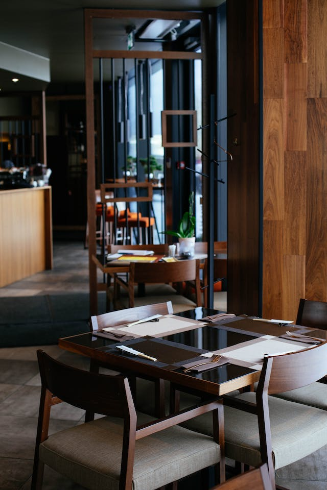
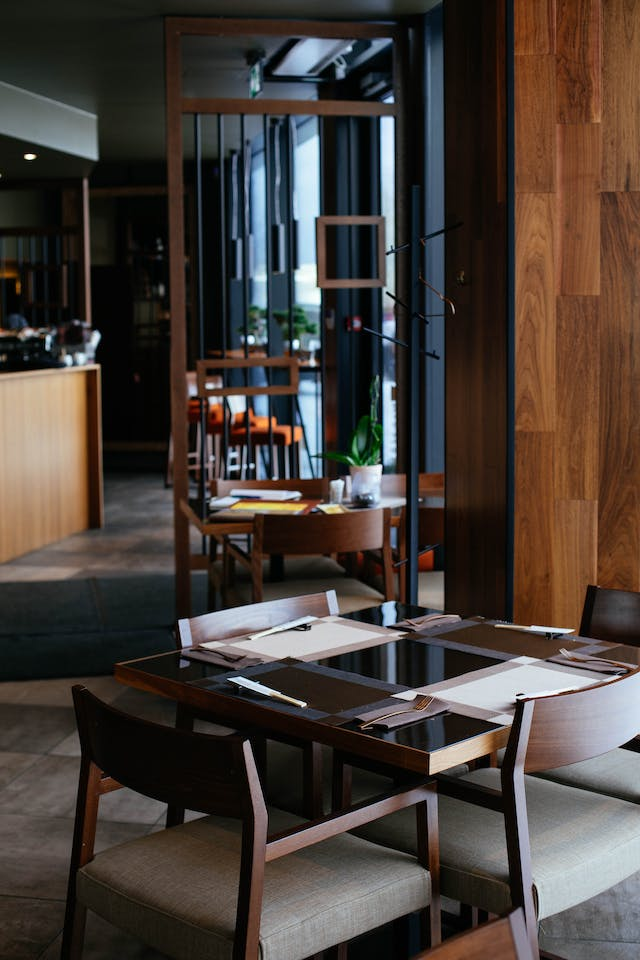

Welcome To Vintage Hotel
> Read More
İletişim sayfasında, rezervasyonlarınız, sorularınız veya önerileriniz için bize ulaşabileceğiniz iletişim seçeneği bulunmaktadır.
Otelin restoran ve barında, zengin bir menü ve benzersiz içecek seçenekleriyle unutulmaz bir lezzet deneyimi sunulmaktadır.
Otelin servisleri, konukların rahatı ve memnuniyeti için özenle planlanmış olup, kaliteli hizmet anlayışıyla konuklara özel deneyim sunmaktadır.
Otelin spa bölümü, yenilenme ve rahatlama için geniş bir yelpazedeki tedavi ve hizmetleriyle konuklarına özel bir kaçış ve dinlenme imkanı sunmaktadır.
 


"Her seyahatinizin en önemli noktalarından biri, günün yorgunluğunu atabileceğiniz, kendinizi huzurlu ve rahat hissedebileceğiniz bir yatakta dinlenmektir. Otelin yatakları, sadece bir uyku alanı değil, aynı zamanda konukların konforunu ve memnuniyetini sağlamak için özenle tasarlanmış bir vaha niteliğindedir.
Üzerindeki yumuşak döşemeler, dokunması keyifli kumaşlar ve özel tasarım detaylarıyla, her anınızı özel kılmak için tasarlanmıştır. Yatakların sunduğu yüksek konfor seviyesi, konukların uyku kalitesini artırır ve dinlenmiş bir şekilde yeni bir günün başlangıcına hazırlar.
Uyku kalitesini artıran, dinlendirici ve huzur verici bir deneyim sunan bu yataklar, seyahatlerinizdeki en güzel anılarınızdan biri olabilir."
Read More"Seyahatinizin önemli noktalarından biri ise, günün yorgunluğunu atabileceğiniz, kendinizi huzurlu ve rahat hissedebileceğiniz bir yatakta dinlenmektir. Otelin yatakları, sadece bir uyku alanı değil, aynı zamanda konukların konforunu ve memnuniyetini sağlamak için özenle tasarlanmış bir vaha niteliğindedir.
Üzerindeki yumuşak döşemeler, dokunması keyifli kumaşlar ve özel tasarım detaylarıyla, her anınızı özel kılmak için tasarlanmıştır. Yatakların sunduğu yüksek konfor seviyesi, konukların uyku kalitesini artırır ve dinlenmiş bir şekilde yeni bir günün başlangıcına hazırlar.
Uyku kalitesini artıran, dinlendirici ve huzur verici bir deneyim sunan bu yataklar, seyahatlerinizdeki en güzel anılarınızdan biri olabilir."
Read More

"Otelin oturma alanları, konuklara konforlu ve davetkar bir ortam sunarak, seyahatlerini daha keyifli hale getirir. Bu alanlar, dinlenmek, sosyalleşmek veya çalışmak için ideal bir atmosfer sunar. Lobi, otelin sosyal merkezi olma özelliğini taşır. Geniş ve şık tasarımıyla dikkat çeken lobide, konuklar rahat koltuklar ve modern dekorasyonla donatılmış alanlarda bir araya gelerek vakit geçirebilirler. Misafirler, burada bir şeyler içebilir, kitap okuyabilir veya sevdikleriyle sohbet edebilir.
Açık hava oturma alanları ise genellikle otelin bahçe veya terasında bulunur. Doğanın keyfini çıkarabileceğiniz bu alanlar, manzara eşliğinde dinlenmek veya açık havada vakit geçirmek isteyenler için idealdir. Özellikle güzel havalarda tercih edilen bu alanlar, konuklara ferah bir ortam sunar.
Read More